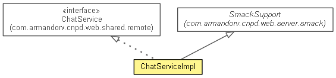

com.armandorv.cnpd.web.server.remote
Class ChatServiceImpl
java.lang.Object
 com.armandorv.cnpd.web.server.smack.SmackSupport
com.armandorv.cnpd.web.server.remote.ChatServiceImpl
com.armandorv.cnpd.web.server.smack.SmackSupport
com.armandorv.cnpd.web.server.remote.ChatServiceImpl
- All Implemented Interfaces:
- ChatService
@ApplicationScoped
public class ChatServiceImpl
- extends SmackSupport
- implements ChatService

|
Method Summary |
boolean |
addContactToChat(java.lang.String username,
java.lang.String contactUsername)
Add a contact to Chat contacts list of a user GTalk contacts list (Not google contacts). |
boolean |
connect(java.lang.String username)
Connect a user to the chat communications system. |
boolean |
disconnectt(java.lang.String username)
Disconnect a user from the chat communications system. |
boolean |
sendMessage(java.lang.String gmailAddressFrom,
java.lang.String gmailAddressTo,
java.lang.String sentText)
Send a message to a contact. |
| Methods inherited from class java.lang.Object |
clone, equals, finalize, getClass, hashCode, notify, notifyAll, toString, wait, wait, wait |
ChatServiceImpl
public ChatServiceImpl()
sendMessage
public boolean sendMessage(java.lang.String gmailAddressFrom,
java.lang.String gmailAddressTo,
java.lang.String sentText)
- Description copied from interface:
ChatService
- Send a message to a contact.
- Specified by:
sendMessage in interface ChatService
sentText - text of the message.
- Returns:
- true.
addContactToChat
public boolean addContactToChat(java.lang.String username,
java.lang.String contactUsername)
- Description copied from interface:
ChatService
- Add a contact to Chat contacts list of a user GTalk contacts list (Not google contacts).
- Specified by:
addContactToChat in interface ChatService
- Returns:
- true if all OK.
connect
public boolean connect(java.lang.String username)
- Description copied from interface:
ChatService
- Connect a user to the chat communications system.
- Specified by:
connect in interface ChatService
- Returns:
- true if all OK.
disconnectt
public boolean disconnectt(java.lang.String username)
- Description copied from interface:
ChatService
- Disconnect a user from the chat communications system.
- Specified by:
disconnectt in interface ChatService
- Returns:
- true if all OK.
Copyright © 2012 JBoss, a division of Red Hat. All Rights Reserved.